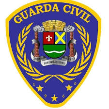

Carregando o modelo original e seus materiais…
Geometria, disposição e logos preservados do modelo enviado. Modelo 02, com os novos acabamentos e imagens preservados. As estruturas azuis recebem acabamento visual de espuma. Laje, luminárias, revestimentos e equipamentos complementam o estudo.
Visualização conceitual, sem dimensionamento executivo ou certificação. A representação dos materiais não comprova contenção balística. A aplicabilidade e as edições das ABNT NBR 15000 e NBR 10152, assim como proteção, acústica, ventilação e segurança contra incêndio, devem ser verificadas pelos responsáveis técnicos.
Use Abrir porta e caminhe pela passagem próxima à entrada para circular entre os ambientes. Na vista geral, arraste para girar e use a roda do mouse para aproximar.